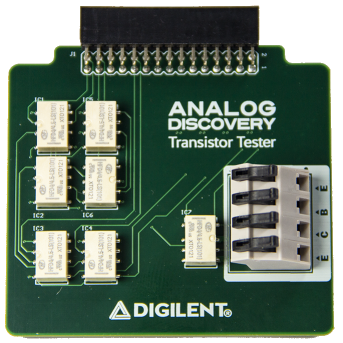
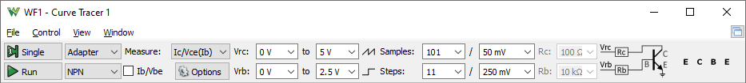

The Transistor Tester Adapter is a module that allows you to add the functionality of curve tracer to your test equipment suite. The Transistor Tester Adapter allows you to analyze the characteristics of discrete semiconductor devices like diodes, NPN and PNP transistors, and both P-Type and N-Type FETs. The Transistor Tester Adapter is equipped with the 2×15 MTE Connector, which makes it compatible with Analog Discovery 1, 2, and Analog Discovery 2-NI Edition.

For more information, visit the reference page.
The board can be controlled by the Curve Tracer instrument after selecting Adapter. The instrument will take control over the Oscilloscope, Wavegen channels 1 and 2, Power Supplies and Static (Digital) IO device resources.
